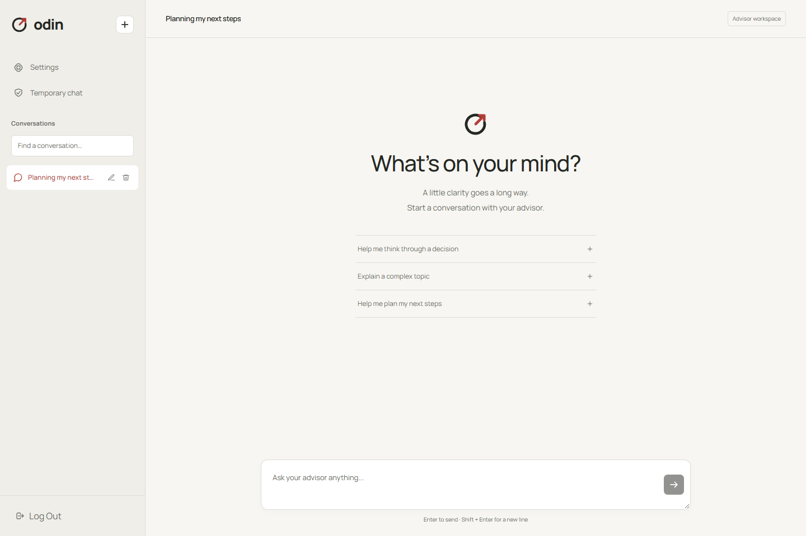
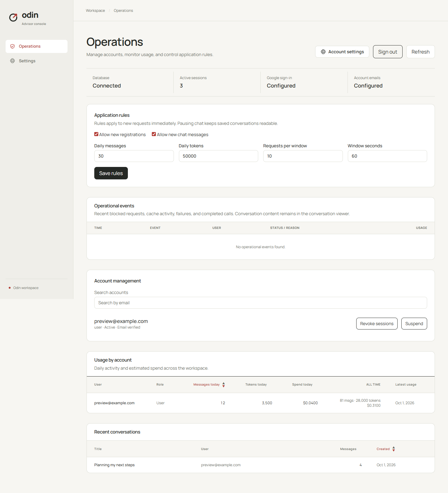
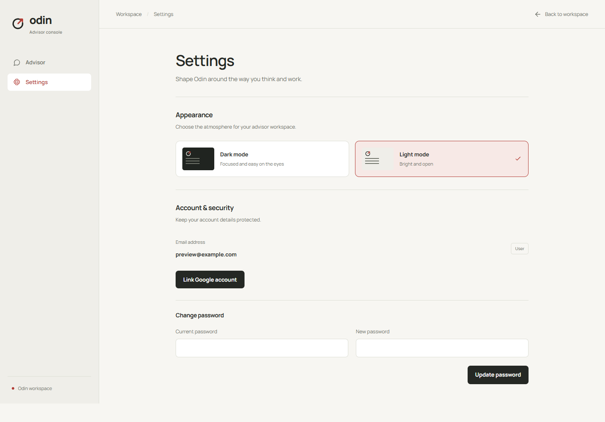

Odin
Project 1 · Sep 5 – Oct 2, 2026 · with Neil EspinosaAn AI study and project advisor. Users sign in, chat with an advisor that answers from approved reference documents, and admins control usage and accounts.



Context / problem
Students looking for study and project guidance get generic answers from general chatbots. Odin answers from documents the program controls, keeps a history people can return to, and lets admins cap usage so costs stay predictable.
My role
Backend developer, with some frontend work. I handled most of the server, database, AI integration and security work.
What I built
- Set up the project on day one: FastAPI, Vite + React, PostgreSQL on Supabase, and Alembic migrations
- Session login with cookies and the API for creating, renaming and deleting conversations
- The AI pipeline: OpenRouter for answers, Google Docs as the cached source the advisor answers from, and safe loading of the service-account key
- Daily message and token limits, with Postgres row locking so two requests at once can't go over the cap
- Security hardening: CSRF origin checks, locked-down database tables, and tests showing one user can't read another's data
- The admin console: usage table, event viewer and limits admins can change
- Frontend reliability: a crash screen instead of a white page, a redirect when a session expires, and a themed rename dialog
- The evaluation and test setup, database backup and rollback steps, and the final PRD
Outputs
- Live app on Vercel (frontend) and Render (backend)
- PRD, timeline and verification documents
- Backend test suite and evaluation results
Skills shown
FastAPIPostgreSQLSQLAlchemyAlembicLLM integrationAuth & sessionsConcurrencyAppSecReact + TSDeployment